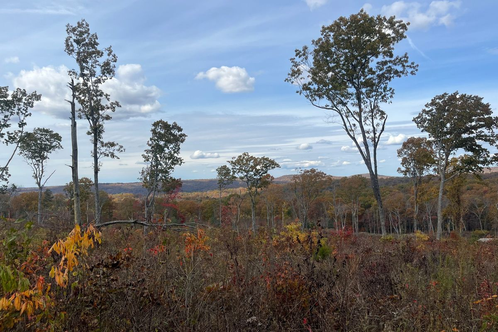
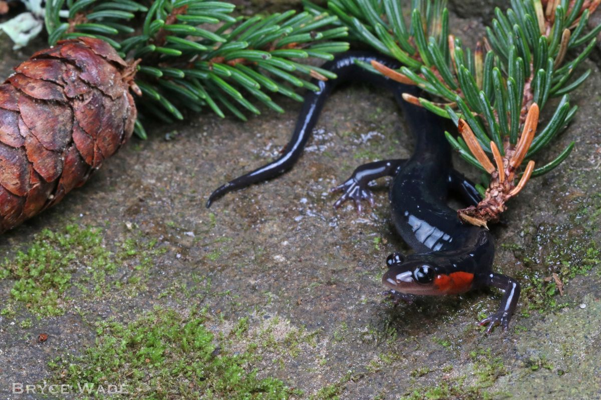

Research
My work connects genetics, landscapes, and conservation practice, mostly in salamanders.
Landscape genetics
I study how landscape features like forests, rivers, and roads affect gene flow. I'm especially interested in how landscape genetics can be used for conservation management and the importance of spatial replication in this process.
Conservation genomics
I study how genomics can be used for informing conservation and how factors like connectvity and habitat loss influence the genetic diversity of populations.
Connectivity and land use
I use connectivity models to inform land use planning and mitigation on real landscapes.
Long-term monitoring
I use long-term monitoring datasets to help andswer ecological and conservation questions.

